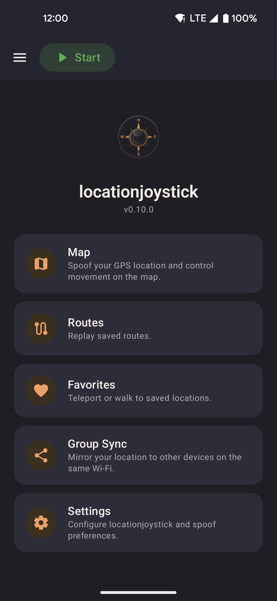

Home screen
The main hub after onboarding. Navigate to any feature from here.

- Tap any card to navigate to Map, Routes, Favorites, Settings, or About.
- Open the navigation drawer (hamburger icon) to jump between screens from anywhere in the app.
- The status bar shows whether mock location is currently active.
Last remembered location
When you reopen the app, locationjoystick restores the last spoofed position automatically. No need to re-enter coordinates after a restart. Toggle this in Settings if you prefer to always start fresh.
Background service
Once spoofing is started, a foreground service (MockLocationService) keeps it running
while you use other apps or the screen is off. A persistent low-priority notification indicates
the service is active — tapping "Stop" in the notification ends spoofing cleanly without opening the app.
The service holds the mock location provider registration for the duration of the session. If the service is killed by the OS (e.g. aggressive battery management on some devices), spoofing stops and the location reverts to the device's real GPS. Re-open the app to restart.
Routes, roaming, and walk-to all run inside this service — they continue uninterrupted while the screen is off or another app is in the foreground.